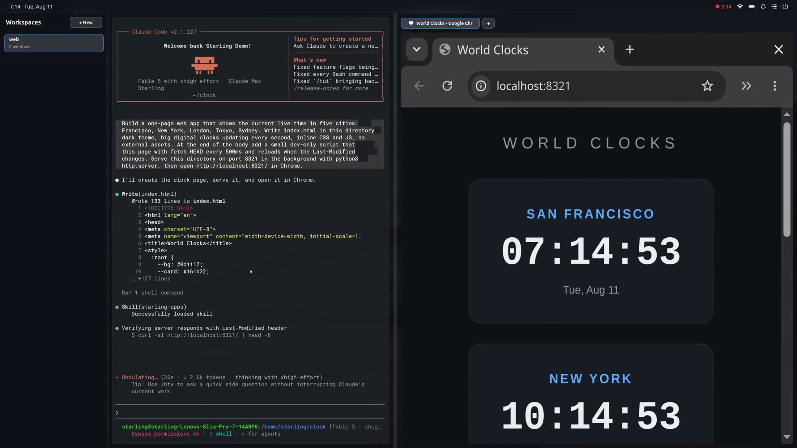

Your Linux applications
Bring familiar applications such as Chrome and VS Code into your workspace, alongside the tools built into Starling.
STARLING DESKTOP / OPEN SOURCE
A fast, native home for your applications. Everyday tools, dedicated agent workspaces, and more ways to make the desktop your own.
An early preview for Ubuntu and Windows through WSL2.

BUILT FOR YOUR REAL WORK
The desktop brings your applications, windows, dock, and menus together. Its foundation is compiled Swift, GPU rendering, and the open Starling SDK.
Bring familiar applications such as Chrome and VS Code into your workspace, alongside the tools built into Starling.
Files, Terminal, Settings, and an App Store cover the essentials, from finding a document to setting up your workspace.
Dock, menus, and windows live in one widget tree. The shared SDK connects the interface, rendering, and platform hosts.
Read the implementation, follow development, and help shape the desktop. The project is free to use and Apache 2.0 licensed.
DEDICATED AGENT WORKSPACES
Give an agent a workspace of its own, with the applications it opens beside its terminal.
Keep the work in view as it happens. Move between workspaces, inspect the applications, and take over when you need to. The workspace makes the agent’s activity part of the desktop.
Explore the project ↗
MORE WAYS TO WORK
Use the familiar 2D desktop, or explore a living 3D city.
The 3D view is one feature of a broader desktop. Choose a perspective while keeping your applications and work at the center of the experience.
SEE IT IN MOTION
Watch the running desktop, its applications, and the switch between perspectives. A 2 minute 50 second demo with music and English narration.
Original instrumental music and AI-generated narration. Sample film: Big Buck Bunny, © 2008 Blender Foundation, CC BY 3.0, resized for playback.
MAKE YOURSELF AT HOME
An early preview for Ubuntu 26.04 LTS (amd64), and Windows through WSL2 with Ubuntu 26.04.
On Ubuntu Desktop, Starling adds a session alongside your existing desktop. On Windows, run it in WSL2 and connect with Remote Desktop.
Download Desktop 0.5.0 ↗Download and install the package, log out, then choose Starling from the sign-in screen’s session menu.
Install the package inside Ubuntu, run
starling-session, and connect using
mstsc /v:localhost:3390.